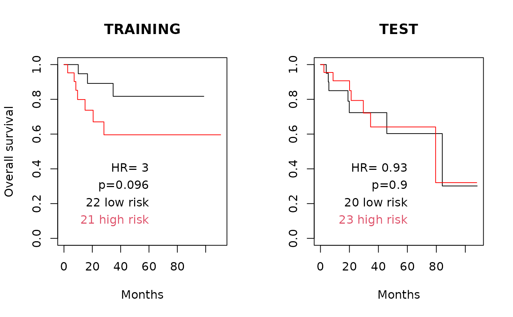

opt2D.RdThis function implements parallelized two-dimensional optimization of Elastic Net penalty parameters. This is accomplished by scanning a regular grid of L1/L2 penalties, then using the top five CVL penalty combinations from this grid as starting points for the convex optimization problem.
Number of times to repeat the simulation (around 50 is suggested)
numeric vector of length two, giving minimum and maximum constraints on the L1 penalty
numeric vector of length two, giving minimum and maximum constraints on the L2 penalty
"L1" to optimize L1 followed by L2, "L2" to optimize L2 followed by L1, or "both" to optimize both simultaneously in a two-dimensional optimization.
An integer number of processors to use.
Number of values of the L1 penalty in the regular grid of L1/L2 penalties
Number of values of the L2 penalty in the regular grid of L1/L2 penalties
Optional cluster object created with the makeCluster() function of the parallel package. If this is not set, pensim calls makeCluster(nprocessors, type="SOCK"). Setting this parameter can enable parallelization in more diverse scenarios than multi-core desktops; see the documentation for the parallel package. Note that if cl is user-defined, this function will not automatically run parallel::stopCluster() to shut down the cluster.
arguments passed on to optL1 and optL2 (dofirst="L1" or "L2"), or cvl (dofirst="both") functions of the penalized R package
This function sets up a SNOW (Simple Network of Workstations) "sock" cluster to parallelize the task of repeated tunings the Elastic Net penalty parameters. Three methods are implemented, as described by Waldron et al. (2011): lambda1 followed by lambda2 (lambda1-lambda2), lambda2 followed by lambda1 (lambda2-lambda1), and lambda1 with lambda2 simultaneously (lambda1+lambda2). Tuning of the penalty parameters is done by the optL1 or optL2 functions of the penalized R package.
Returns a matrix with the following columns:
optimized value of the L1 penalty parameter
optimized value of the L2 penalty parameter
optimized cross-validated likelihood
0 if the optimization converged, non-zero otherwise (see stats:optim for details)
number of calls to cvl function during optimization
argmax coefficients for the model with this value of the tuning parameter
The matrix contains one row for each repeat of the regression.
Waldron L, Pintilie M, Tsao M-S, Shepherd FA, Huttenhower C*, Jurisica I*: Optimized application of penalized regression methods to diverse genomic data. Bioinformatics 2011, 27:3399-3406. (*equal contribution)
Depends on the R packages: penalized, parallel, rlecuyer
optL1, optL2, cvl
data(beer.exprs)
data(beer.survival)
## Select just 100 genes to speed computation:
set.seed(1)
beer.exprs.sample <- beer.exprs[sample(1:nrow(beer.exprs), 100),]
## Apply an unreasonably strict gene filter here to speed computation
## time for the Elastic Net example.
gene.quant <- apply(beer.exprs.sample, 1, quantile, probs = 0.75)
dat.filt <- beer.exprs.sample[gene.quant > log2(150),]
gene.iqr <- apply(dat.filt, 1, IQR)
dat.filt <- as.matrix(dat.filt[gene.iqr > 1,])
dat.filt <- t(dat.filt)
## Define training and test sets
set.seed(9)
trainingset <- sample(rownames(dat.filt), round(nrow(dat.filt) / 2))
testset <-
rownames(dat.filt)[!rownames(dat.filt) %in% trainingset]
dat.training <- data.frame(dat.filt[trainingset,])
pheno.training <- beer.survival[trainingset,]
library(survival)
surv.training <- Surv(pheno.training$os, pheno.training$status)
dat.test <- data.frame(dat.filt[testset,])
all.equal(colnames(dat.training), colnames(dat.test))
#> [1] TRUE
pheno.test <- beer.survival[testset,]
surv.test <- Surv(pheno.test$os, pheno.test$status)
set.seed(1)
##ideally set nsim=50, fold=10, but this takes 100x longer.
system.time(
output <- opt2D(
nsim = 1,
L1range = c(0.1, 1),
L2range = c(20, 1000),
dofirst = "both",
nprocessors = 1,
response = surv.training,
penalized = dat.training,
fold = 5,
positive = FALSE,
standardize = TRUE
)
)
#> [1] "scanning for good starting points for 2-D optimization..."
#> [1] "Scanning L1 and L2 for good start points for 2D optimization."
#> [1] "Note: not scanning values of L1 or L2 less than 1 to speed computation, but optimization can still converge on values less than 1 if the minimum range is less than 1."
#> [1] "Scanning L1 between 1-1"
#> [1] "Scanning L2 between 20-1000"
#> 12345123451234512345123451234512345123451234512345123451234512345123451234512345123451234512345123451234512345123451234512345123451234512345123451234512345123451234512345123451234512345123451234512345123451234512345123451234512345123451234512345123451234512345123451234512345123451234512345123451234512345123451234512345123451234512345123451234512345123451234512345123451234512345123451234512345123451234512345123451234512345123451234512345123451234512345123451234512345123451234512345123451234512345[1] "done scanning. The following start positions will be used:"
#> lambda1 lambda2
#> [1,] 1 20
#> [2,] 1 20
#> [3,] 1 20
#> [4,] 1 20
#> [5,] 1 20
#> [1] "beginning simulations on one processor..."
#> 1234512345123451234512345123451234512345123451234512345123451234512345123451234512345123451234512345123451234512345123451234512345[1] "finished simulations."
#> user system elapsed
#> 1.465 0.000 1.466
cc <- output[which.max(output[, "cvl"]),-1:-5]
output[which.max(output[, "cvl"]), 1:5] #small L1, large L2
#> L1 L2 cvl convergence fncalls
#> 0.10000 20.00000 -42.33116 52.00000 5.00000
sum(abs(cc) > 0) #number of non-zero coefficients
#> [1] 4
preds.training <- as.matrix(dat.training) %*% cc
preds.training.median <- median(preds.training)
preds.training.dichot <-
ifelse(preds.training > preds.training.median, "high risk", "low risk")
preds.training.dichot <-
factor(preds.training.dichot[, 1], levels = c("low risk", "high risk"))
preds.test <- as.matrix(dat.test) %*% cc
preds.test.dichot <-
ifelse(preds.test > preds.training.median, "high risk", "low risk")
preds.test.dichot <-
factor(preds.test.dichot[, 1], levels = c("low risk", "high risk"))
coxphfit.training <- coxph(surv.training ~ preds.training.dichot)
survfit.training <- survfit(surv.training ~ preds.training.dichot)
summary(coxphfit.training)
#> Call:
#> coxph(formula = surv.training ~ preds.training.dichot)
#>
#> n= 43, number of events= 10
#>
#> coef exp(coef) se(coef) z Pr(>|z|)
#> preds.training.dichothigh risk 1.0970 2.9952 0.6923 1.585 0.113
#>
#> exp(coef) exp(-coef) lower .95 upper .95
#> preds.training.dichothigh risk 2.995 0.3339 0.7711 11.63
#>
#> Concordance= 0.65 (se = 0.068 )
#> Likelihood ratio test= 2.78 on 1 df, p=0.1
#> Wald test = 2.51 on 1 df, p=0.1
#> Score (logrank) test = 2.77 on 1 df, p=0.1
#>
coxphfit.test <- coxph(surv.test ~ preds.test.dichot)
survfit.test <- survfit(surv.test ~ preds.test.dichot)
summary(coxphfit.test)
#> Call:
#> coxph(formula = surv.test ~ preds.test.dichot)
#>
#> n= 43, number of events= 14
#>
#> coef exp(coef) se(coef) z Pr(>|z|)
#> preds.test.dichothigh risk -0.07071 0.93173 0.53945 -0.131 0.896
#>
#> exp(coef) exp(-coef) lower .95 upper .95
#> preds.test.dichothigh risk 0.9317 1.073 0.3237 2.682
#>
#> Concordance= 0.532 (se = 0.076 )
#> Likelihood ratio test= 0.02 on 1 df, p=0.9
#> Wald test = 0.02 on 1 df, p=0.9
#> Score (logrank) test = 0.02 on 1 df, p=0.9
#>
(p.training <-
signif(summary(coxphfit.training)$logtest[3], 2)) #likelihood ratio test
#> pvalue
#> 0.096
(hr.training <- signif(summary(coxphfit.training)$conf.int[1], 2))
#> [1] 3
(hr.lower.training <- summary(coxphfit.training)$conf.int[3])
#> [1] 0.7710961
(hr.upper.training <- summary(coxphfit.training)$conf.int[4])
#> [1] 11.63468
par(mfrow = c(1, 2))
plot(
survfit.training,
col = c("black", "red"),
conf.int = FALSE,
xlab = "Months",
main = "TRAINING",
ylab = "Overall survival"
)
xmax <- par("usr")[2] - 50
text(
x = xmax,
y = 0.4,
lab = paste("HR=", hr.training),
pos = 2
)
text(
x = xmax,
y = 0.3,
lab = paste("p=", p.training, "", sep = ""),
pos = 2
)
tmp <- summary(preds.training.dichot)
text(
x = xmax,
y = c(0.2, 0.1),
lab = paste(tmp, names(tmp)),
col = 1:2,
pos = 2
)
## Now the test set.
## in the test set, HR=1.7 is not significant - not surprising with the
## overly strict non-specific pre-filter (IQR>1, 75th percentile > log2(150)
(p.test <-
signif(summary(coxphfit.test)$logtest[3], 2)) #likelihood ratio test
#> pvalue
#> 0.9
(hr.test <- signif(summary(coxphfit.test)$conf.int[1], 2))
#> [1] 0.93
(hr.lower.test <- summary(coxphfit.test)$conf.int[3])
#> [1] 0.3236785
(hr.upper.test <- summary(coxphfit.test)$conf.int[4])
#> [1] 2.682062
plot(
survfit.test,
col = c("black", "red"),
conf.int = FALSE,
xlab = "Months",
main = "TEST"
)
text(
x = xmax,
y = 0.4,
lab = paste("HR=", hr.test),
pos = 2
)
text(
x = xmax,
y = 0.3,
lab = paste("p=", p.test, "", sep = ""),
pos = 2
)
tmp <- summary(preds.test.dichot)
text(
x = xmax,
y = c(0.2, 0.1),
lab = paste(tmp, names(tmp)),
col = 1:2,
pos = 2
)
